Eggcellent Analysis: Forecasting the Future of Egg Prices – Part 2 (4/1/25)
Recap: Analyzing Egg Prices and Forecasting Future Trends
In this first part of our analysis, we explored historical egg prices from 1980 to the present, revealing some key trends and insights about the price volatility and its potential future direction.
Key Findings:
Descriptive Statistics showed that egg prices typically range from $0.68 to $4.95, with most prices clustering around $1.00–$1.50 per dozen. However, extreme price spikes have become more frequent, especially after 2020.
Egg Prices Over Time highlighted a period of stability pre-2005, followed by gradual increases and significant price surges post-2020. These surges have been linked to factors like avian flu outbreaks, rising production costs, and supply chain disruptions.
Price Distribution showed that while prices were historically low, recent years have seen more frequent and larger price spikes, reflecting increased volatility in the market.
Box Plot Breakdown revealed that price spikes above $3.00–$5.00 per dozen are becoming more common, suggesting that high prices might be the new norm.
Moving Average Analysis demonstrated a long-term upward trend in egg prices, with notable short-term surges around specific years. The moving average helped smooth out short-term fluctuations and revealed that while volatility may subside, prices are unlikely to return to pre-2020 levels.
Tying This to Forecasting Models:
The next step in our analysis involves applying several forecasting techniques—benchmark methods, regression models, exponential smoothing, and ARIMA—to better predict future egg prices. These methods will allow us to capture both the underlying patterns and short-term fluctuations in price trends.
Benchmark Methods provide a simple baseline forecast to compare against more complex models.
Regression Models can help quantify relationships between egg prices and potential influencing factors (e.g., feed costs, production rates, or supply chain disruptions).
Exponential Smoothing methods, like SES, Holt, and Holt-Winters, will help account for trend and seasonality in the data.
ARIMA models are powerful for capturing autocorrelations and trends in time series data, making them ideal for forecasting long-term price movements.
By applying these various techniques, we can refine our understanding of the forces driving egg prices and provide more accurate predictions for the coming months or years.
Time Series Graphics
Plot the data
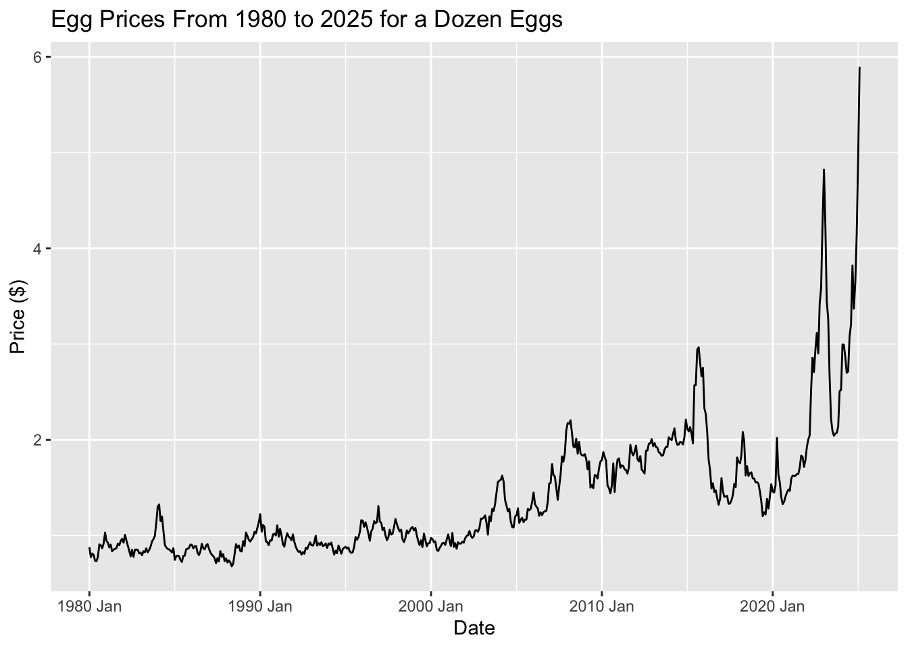
This graph aligns with the one from Part 1’s Egg Prices Over Time: A Steady Climb with Surprising Spikes section, showcasing key trends:
Before 2005: Prices remained fairly steady, showing only slight variations.
2005–2020: A gradual upward trend took hold, with occasional sharp increases influenced by market factors.
Post-2020: Prices hit record highs, with some months experiencing extreme volatility.
Time series patterns
The ACF (Autocorrelation Function) plot helps us identify trends, seasonality, and cyclical patterns in time series data. By calculating correlations between observations at different time lags, the ACF plot shows how past values influence future ones.
Trend: A positive correlation at larger lags indicates a trend.
Seasonality: Repeating spikes at specific intervals suggest seasonal patterns.
Cyclical Behavior: Irregular cycles can show up as sporadic spikes at various lags.
By examining the ACF plot, we can identify these patterns and better understand the structure of the data, guiding the selection of appropriate forecasting methods.
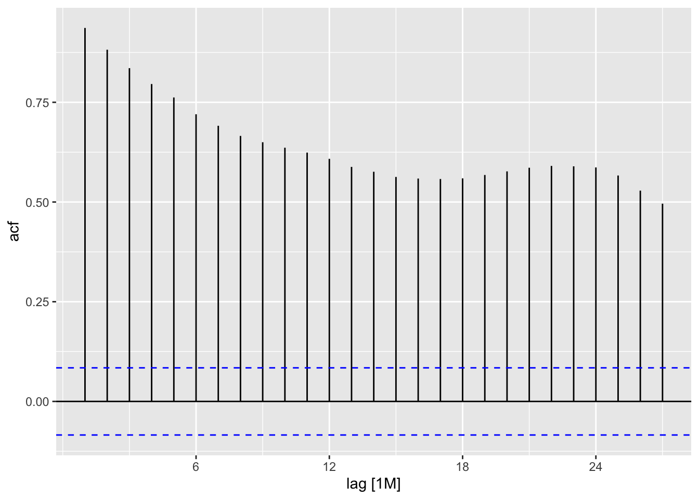
In this plot, we see a strong positive autocorrelation for many lags. The bars remain significantly above the upper significance line for a substantial number of lags, indicating a persistent and significant correlation between the time series at different points in time. This suggests that the time series exhibits strong dependence on its past values. The correlation gradually decreases as the lag increases but remains consistently positive. This kind of pattern is typical of time series with a trend or seasonality. More advanced analysis would be needed to determine the most likely causes (e.g., trend, seasonality, cyclical patterns).
Transformations and adjustments
Transformations are not necessary for my data because the raw egg price data already captures the essential trends and seasonal patterns needed for forecasting. The inflation adjustment, while useful for comparing prices in terms of purchasing power, did not significantly alter the structure of the data or provide additional insights. Instead, it removed trends that are crucial for making accurate predictions. Since my goal is to forecast future prices rather than compare past values in real terms, keeping the original data allows the model to learn from historical price movements without unnecessary modifications. This reinforces the idea that transformations should only be applied when they meaningfully improve the analysis, and in this case, the raw data is already well-suited for time-series forecasting.
Time Series Decomposition
The STL (Seasonal and Trend decomposition using Loess) decomposition is a method used to break down time series data into three key components:
Trend: This represents the long-term progression of the data, showing whether it is generally increasing or decreasing over time.
Seasonality: This captures the repeating patterns or cycles that occur at regular intervals (e.g., yearly or monthly).
Residuals: These are the random fluctuations or noise left after removing the trend and seasonality.
The purpose of STL decomposition is to help us better understand the underlying structure of the data by isolating the components. This can improve forecasting accuracy, as each component can be analyzed and modeled separately. By separating the noise from the actual trend and seasonal patterns, STL decomposition makes it easier to make informed decisions about forecasting models and to interpret long-term behavior more clearly.
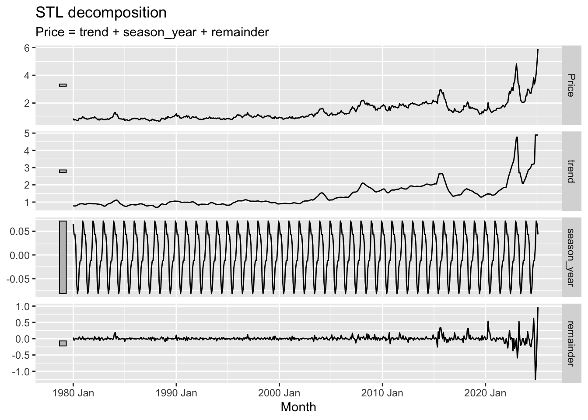
Trend Component: The long-term direction or pattern of the data. In the graph, the trend shows a general upward movement of the price over the years, with some periods of stagnation or slight decline. Notice how it smooths out the short-term fluctuations in the original price series.
Seasonal Component: The cyclical fluctuations that repeat annually. The graph clearly shows a periodic pattern, indicating regular seasonal variations in price. The relatively consistent amplitude suggests a stable seasonal effect.
Remainder Component: This component comprises the remaining parts of the time series – the noise or random fluctuations after the trend and seasonal components have been removed. It represents unpredictable variations that do not follow a clear pattern or cycle. In this instance, the remainder shows relatively small fluctuations around zero suggesting that after accounting for the trend and seasonal variations, there isn’t a significant amount of unexplained variance.
Benchmark Forecasting Methods
Training set
We train the model using an 80/20 split, where the first 80% of the data serves as the training set and the final 20% is reserved for testing. The training period spans from January 1, 1980, to December 1, 2012, while the testing period runs from January 1, 2013, to February 1, 2025.
Fit the model
To establish a baseline for model performance, we employ several benchmark forecasting methods: mean, naïve, drift, and seasonal naïve. These methods provide fundamental comparisons, helping to assess the effectiveness of more advanced forecasting techniques. The mean method predicts future values using the average of past observations, while the naïve method assumes the most recent value will persist. The drift method extends past trends linearly, and the seasonal naïve method accounts for recurring patterns by using the value from the same period in the previous cycle. These benchmarks serve as reference points to evaluate whether more sophisticated models offer meaningful improvements.
Compare the forecast accuracy across models
## # A tibble: 4 × 10
## .model .type ME RMSE MAE MPE MAPE MASE RMSSE ACF1
## <chr> <chr> <dbl> <dbl> <dbl> <dbl> <dbl> <dbl> <dbl> <dbl>
## 1 Drift Test -0.113 0.765 0.585 -16.4 29.6 4.33 4.06 0.874
## 2 Mean Test 0.981 1.27 0.981 40.8 40.8 7.26 6.72 0.879
## 3 Naïve Test 0.0967 0.807 0.551 -5.89 24.9 4.08 4.28 0.879
## 4 Seasonal naïve Test 0.266 0.841 0.551 3.14 22.9 4.08 4.47 0.872When comparing forecast accuracy between models, we evaluate multiple error metrics to determine which method provides the most reliable predictions. Key metrics include:
Mean Error (ME): Measures bias in the forecasts, indicating whether predictions tend to overestimate or underestimate actual values.
Root Mean Squared Error (RMSE): Penalizes larger errors more heavily, making it useful for assessing overall predictive performance.
Mean Absolute Error (MAE): Provides a straightforward measure of average forecast error, treating all deviations equally.
Mean Percentage Error (MPE) & Mean Absolute Percentage Error (MAPE): Express errors as percentages, helping to compare performance across different scales.
Mean Absolute Scaled Error (MASE): Standardizes errors relative to a simple baseline, such as naïve forecasting, to evaluate model improvement.
Root Mean Squared Scaled Error (RMSSE): Similar to RMSE but scaled for better interpretability in comparing models.
Autocorrelation of Residuals at Lag 1 (ACF1): Measures how much forecast errors are correlated over time, with high values indicating potential issues in capturing trends or seasonality.
In this comparison, lower values for RMSE, MAE, and MAPE generally indicate better model performance. Additionally, a lower ACF1 suggests fewer patterns in residuals, meaning the model is effectively capturing underlying trends.
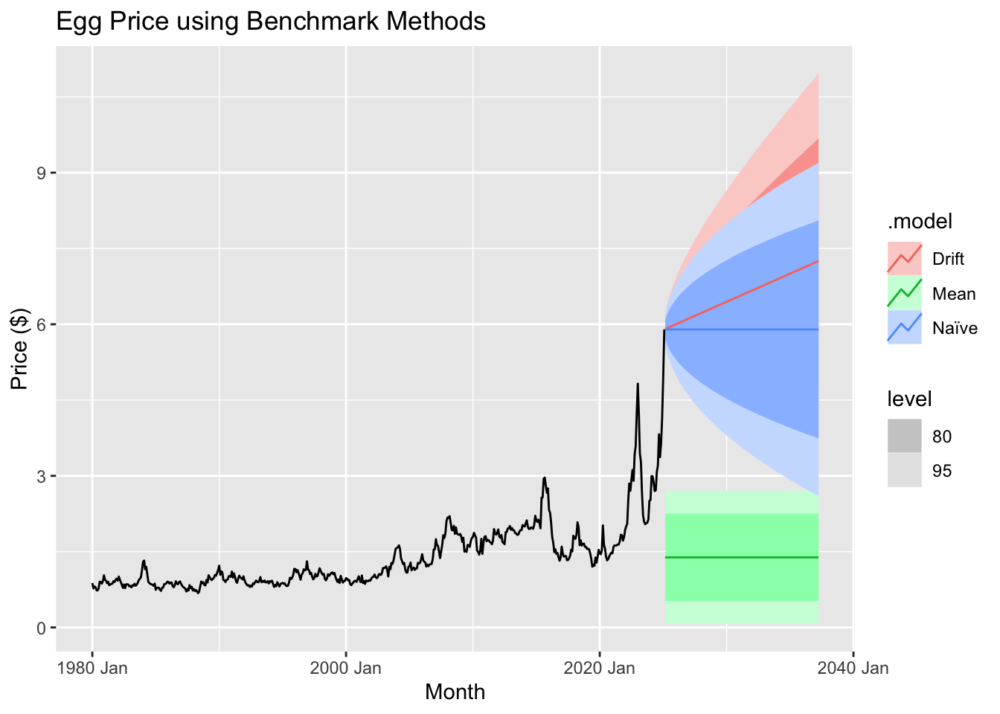
Which method provides the best forecast accuracy? Discuss the results.
The drift method emerges as the most effective forecasting approach based on key performance metrics. It achieves the lowest RMSE (0.7647) and MAE (0.5854), indicating that its predictions are more accurate and closer to actual values than those of other methods. Additionally, it has a lower MAPE (29.58%), demonstrating a smaller average percentage error, and outperforms alternatives in scaled error metrics, with the lowest MASE (4.33) and RMSSE (4.06). While all models exhibit some autocorrelation, the drift method shows a slightly lower ACF1 (0.8737), suggesting it captures more of the underlying data structure. The reason for its superior performance lies in its ability to account for long-term trends by projecting the historical average rate of change forward, unlike the naïve method, which assumes the latest observation is the best predictor. The seasonal naïve method, which relies on repeating past seasonal patterns, does not provide better accuracy, implying that seasonality alone is insufficient to explain the data. The mean method performs the worst because it fails to capture any trends, leading to higher errors. While the drift method proves to be the most reliable among the tested models, residual autocorrelation suggests that further refinements, such as incorporating ARIMA or seasonal adjustments, could further enhance predictive accuracy.
Test the residuals of your preferred method
Assuming that the Drift method provides the best forecast accuracy
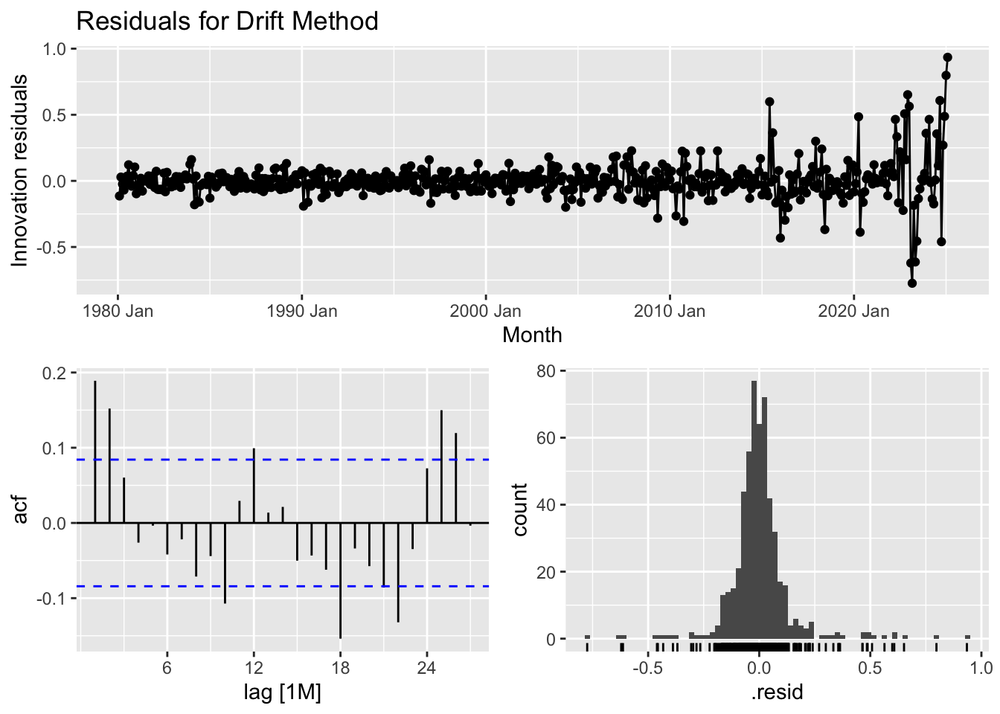
The purpose of checking residuals and conducting the Ljung-Box test is to ensure that the forecasting model is correctly capturing the structure of the data and making reliable predictions.
Residual Analysis: Helps confirm that any remaining patterns in the data have been accounted for. Ideally, residuals should be random, meaning the model has successfully extracted all meaningful signals. If patterns remain, the model may need adjustments.
Ljung-Box Test: Specifically checks for autocorrelation in residuals. If residuals are correlated, it suggests the model is missing key relationships in the data, reducing its effectiveness in forecasting future values.
By performing these checks, we validate that the model is robust, unbiased, and not overlooking important trends that could impact forecasting accuracy.
Discuss residual properties and the Ljung-Box test value.
The diagnostic analysis of the time series model highlights areas where improvements could enhance its predictive performance. The residual plot reveals that while most residuals are centered around zero, certain periods show clustering of positive or negative values, suggesting that some underlying patterns remain uncaptured. Additionally, the variability of residuals increases over time, indicating potential heteroscedasticity, where prediction errors are not consistent across the dataset. The autocorrelation function (ACF) plot further supports this concern, as several lags exhibit significant autocorrelation, meaning past errors influence future ones—implying that the model does not fully account for temporal dependencies. The histogram of residuals suggests an approximately normal distribution but with slight skewness and the presence of outliers that may impact the model’s accuracy. Furthermore, the Ljung-Box test (statistic = 45.86, p-value = 1.52e-06) confirms that residuals exhibit significant autocorrelation, reinforcing the need for adjustments. Addressing these issues may involve incorporating autoregressive or moving average components (such as in an ARIMA model), applying transformations to stabilize variance, or considering additional explanatory variables. Refining the model in these ways can lead to more reliable and unbiased forecasts, making it more effective for real-world applications.
Forecasting
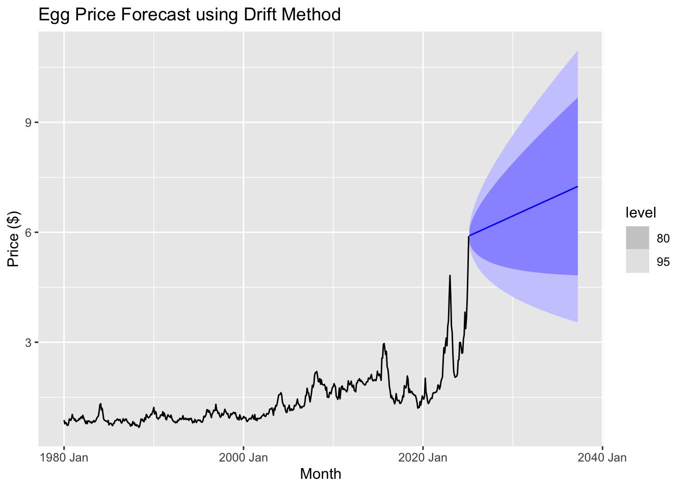
Using the drift method, we observe that egg prices are projected to continue rising over the next several years. The forecast suggests a steady upward trend, with prices potentially reaching around $6.25 within the forecast period. However, the widening confidence intervals indicate increasing uncertainty over time, meaning actual prices could fluctuate above or below this estimate.
Regression model
## Series: Price
## Model: TSLM
##
## Residuals:
## Min 1Q Median 3Q Max
## -0.8400 -0.2496 -0.0348 0.1653 3.6334
##
## Coefficients:
## Estimate Std. Error t value Pr(>|t|)
## (Intercept) 1.218e-01 5.101e-02 2.388 0.0173 *
## Month 1.064e-04 3.984e-06 26.718 <2e-16 ***
## ---
## Signif. codes: 0 '***' 0.001 '**' 0.01 '*' 0.05 '.' 0.1 ' ' 1
##
## Residual standard error: 0.4417 on 540 degrees of freedom
## Multiple R-squared: 0.5693, Adjusted R-squared: 0.5685
## F-statistic: 713.9 on 1 and 540 DF, p-value: < 2.22e-16The time series linear model (TSLM) for Price includes an intercept of 0.1218 and a Month coefficient of 0.0001064, both statistically significant, with p-values of 0.0173 and < 2.2e-16, respectively. This means that, on average, Price increases by approximately 0.0001064 per month. The residuals, or the differences between the actual and predicted values, range from -0.84 to 3.6334, with a median near zero, suggesting the model does not systematically overpredict or underpredict. However, the residual standard error (0.4417) indicates some variation in the data that the model does not fully explain.
From a statistical standpoint, the R-squared value of 0.5693 means that approximately 57% of the variation in Price is explained by the model, which is decent but leaves room for improvement. The F-statistic of 713.9 and its near-zero p-value confirm that the model as a whole is highly significant. In simpler terms, the model captures a clear upward trend in Price over time, but it does not account for all fluctuations, suggesting that additional variables or a more complex model could improve accuracy.
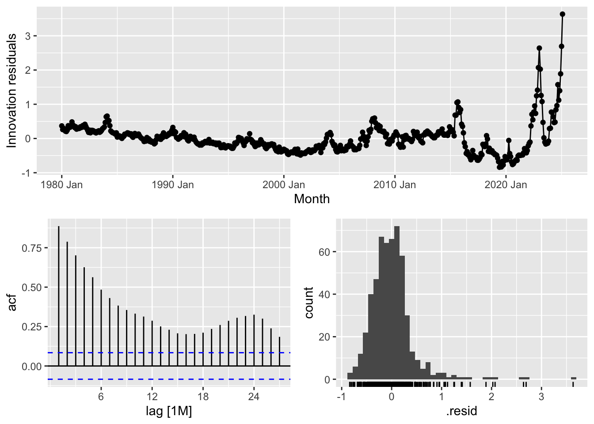
## # A tibble: 1 × 3
## .model lb_stat lb_pvalue
## <chr> <dbl> <dbl>
## 1 tslm 1869. 0Once again we check the residuals and perform the Ljung-Box test. The residual diagnostic plots provide insights into the performance of the model and the randomness of its errors. The top plot shows the innovation residuals over time, ideally expected to be randomly distributed around zero. However, there is an increasing variance toward the most recent years, indicating heteroskedasticity—a sign that the model struggles to capture recent fluctuations accurately. The autocorrelation function (ACF) plot (bottom left) displays the correlation of residuals at different lags. The slow decay of bars suggests the presence of serial correlation, meaning past errors influence future errors, which violates the assumption of white noise residuals. The histogram (bottom right) of residuals should resemble a normal distribution, but deviations, particularly on the right tail, indicate the presence of skewness or extreme values.
The Ljung-Box test statistic (lb_stat = 1869.088) with a p-value of 0 confirms that the residuals are not independently distributed, meaning the model fails to capture all patterns in the data. For a well-fitted model, we expect a high p-value (typically above 0.05), indicating that residuals behave like random noise. Since the p-value here is essentially zero, the model exhibits significant autocorrelation, suggesting that improvements—such as incorporating additional predictors, transforming variables, or switching to a different model—may be necessary to enhance predictive accuracy.
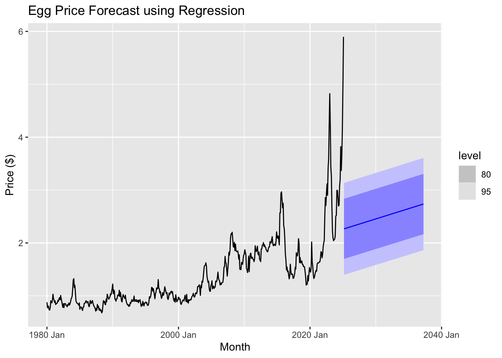
The regression model appears to struggle with capturing the recent volatility and sharp spikes in egg prices, as indicated by the widening confidence intervals and the relatively smooth forecast compared to past fluctuations. This suggests that alternative forecasting methods, such as ARIMA, ETS, or machine learning-based approaches, might provide better predictive performance.
Exponential smoothing
Exponential smoothing methods are a family of forecasting techniques that are widely used for time series data. They are particularly useful when there is a need to forecast data with a trend or seasonality component. These methods assign exponentially decreasing weights to past observations, with more recent observations being weighted more heavily. Here’s a brief overview of the various exponential smoothing methods:
Simple Exponential Smoothing (SES): SES is the most basic form of exponential smoothing. It is used when the time series data does not exhibit any trend or seasonality. The method uses a weighted average of past observations, with weights decreasing exponentially over time. It is ideal for data with a stable mean.
Drift Method: This is a variant of SES that incorporates a linear trend in the data. It adds a drift component to the forecast to account for trends in the data, making it a simple approach to handle data with a slight upward or downward movement over time.
Holt’s Linear Trend Method: This method extends SES by adding a component to account for linear trends in the data. It smooths both the level (average) and the trend (direction of the data movement). It is useful for data with a trend but no seasonality.
Holt-Winters (Damped Trend): This method adds a damping factor to the trend component in Holt’s method. The damping factor ensures that the trend doesn’t grow indefinitely, which is particularly useful when the trend is expected to level off or stabilize over time. It is a more flexible version of Holt’s method, suitable for data with a trend that is expected to slow down.
Additive Exponential Smoothing (Additive ETS): This method is used when both trend and seasonality are present in the data. The “additive” part refers to the way seasonal effects are added to the forecast. This method assumes that the seasonal variations are constant over time (i.e., the same amount is added to the forecast at each seasonal period).
Multiplicative Exponential Smoothing (Multiplicative ETS): Similar to Additive ETS, but it assumes that the seasonal variations are proportional to the level of the series. This means that as the level of the series increases, the seasonal effect also increases or decreases proportionally. This method is useful when the seasonal variation grows larger as the data values increase.
General Exponential Smoothing (ETS): The ETS method is a more generalized framework that can handle both trend and seasonality components. It can be used with both additive and multiplicative seasonal components, depending on the nature of the data. ETS models can automatically select the best model by evaluating different combinations of error, trend, and seasonality components.
Each of these methods has its own strengths, and the choice of which to use depends on the characteristics of the time series data—whether it exhibits trend, seasonality, or both, and whether the seasonal variations are additive or multiplicative.
## # A tibble: 7 × 10
## .model .type ME RMSE MAE MPE MAPE MASE RMSSE ACF1
## <chr> <chr> <dbl> <dbl> <dbl> <dbl> <dbl> <dbl> <dbl> <dbl>
## 1 Drift Test -0.113 0.765 0.585 -16.4 29.6 4.33 4.06 0.874
## 2 ETS Test -0.00256 0.748 0.548 -10.4 26.3 4.06 3.97 0.877
## 3 Holt Test -0.110 0.764 0.584 -16.2 29.5 4.32 4.06 0.874
## 4 Holt_Damped Test 0.100 0.808 0.551 -5.72 24.8 4.07 4.29 0.879
## 5 additive_ETS Test 0.167 0.809 0.540 -2.02 23.5 4.00 4.29 0.881
## 6 multiplicative_ETS Test -0.00256 0.748 0.548 -10.4 26.3 4.06 3.97 0.877
## 7 ses Test 0.101 0.808 0.551 -5.66 24.8 4.07 4.29 0.879When evaluating different forecasting models, the ETS method stands out as the best choice based on multiple performance metrics. Among the tested models, ETS has the lowest root mean squared error (RMSE) at 0.7485, meaning it produces the smallest overall prediction errors on average. It also has a lower mean absolute error (MAE) of 0.5483, indicating more consistent accuracy compared to alternatives like Holt’s method (0.5840) or the Drift method (0.5854). Additionally, ETS achieves a lower mean absolute percentage error (MAPE) of 26.34%, showing better predictive reliability in percentage terms. The model also maintains a relatively low autocorrelation of residuals (ACF1 = 0.8769), meaning that prediction errors are less dependent on previous errors, which improves forecasting stability. While the additive and multiplicative ETS variations perform similarly, their higher RMSE and MAPE values suggest they introduce slightly more error. Overall, the ETS model provides a balanced combination of accuracy, consistency, and error independence, making it the most reliable choice for forecasting.
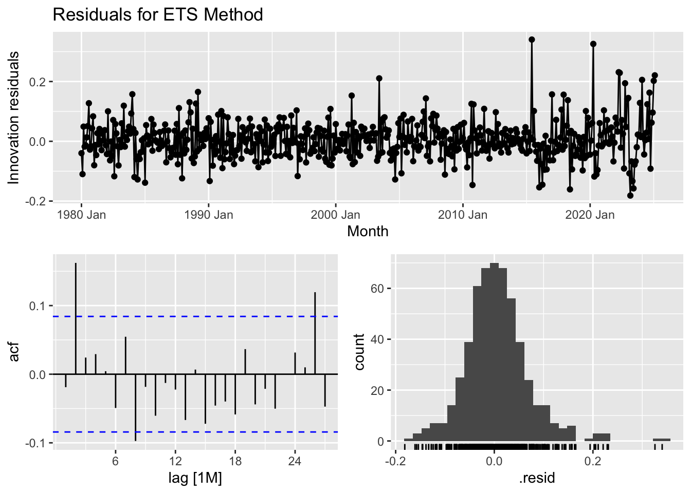
## # A tibble: 1 × 3
## .model lb_stat lb_pvalue
## <chr> <dbl> <dbl>
## 1 ETS 25.8 0.00405The residual analysis for the ETS model provides insights into its effectiveness in capturing patterns within the data. The time series plot of residuals shows that while most residuals fluctuate around zero, periods after 2010 exhibit larger spikes, suggesting some systematic variation that the model may not fully account for. The autocorrelation function (ACF) plot indicates potential autocorrelation, as some lag values exceed the significance bounds, meaning past residuals may influence future ones. The histogram of residuals shows a distribution that is roughly normal but with some outliers, particularly on the right tail, hinting at occasional large errors. The Ljung-Box test, which assesses whether residuals are independent, yields a test statistic of 25.78 and a p-value of 0.0040. Since this p-value is below 0.05, we reject the null hypothesis, suggesting that the residuals exhibit autocorrelation rather than behaving like purely random noise. In summary, while the ETS model captures trends well, the presence of autocorrelation implies that improvements—such as incorporating additional seasonal components or refining the model structure—may be needed to enhance forecasting accuracy.

## # A tibble: 1 × 3
## .model lb_stat lb_pvalue
## <chr> <dbl> <dbl>
## 1 ETS 25.8 0.00405The residual analysis for the ETS model provides insights into its effectiveness in capturing patterns within the data. The time series plot of residuals shows that while most residuals fluctuate around zero, periods after 2010 exhibit larger spikes, suggesting some systematic variation that the model may not fully account for. The autocorrelation function (ACF) plot indicates potential autocorrelation, as some lag values exceed the significance bounds, meaning past residuals may influence future ones. The histogram of residuals shows a distribution that is roughly normal but with some outliers, particularly on the right tail, hinting at occasional large errors. The Ljung-Box test, which assesses whether residuals are independent, yields a test statistic of 25.78 and a p-value of 0.0040. Since this p-value is below 0.05, we reject the null hypothesis, suggesting that the residuals exhibit autocorrelation rather than behaving like purely random noise. In summary, while the ETS model captures trends well, the presence of autocorrelation implies that improvements—such as incorporating additional seasonal components or refining the model structure—may be needed to enhance forecasting accuracy.
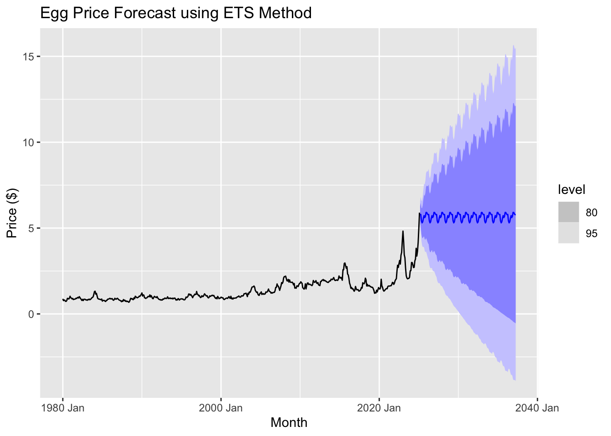
The graph suggests that future egg prices will fluctuate periodically, following a seasonal pattern. The central forecast (blue line) remains relatively stable compared to past volatility, indicating that the ETS model anticipates prices leveling off rather than continuing their sharp rise. However, the widening prediction intervals highlight growing uncertainty, suggesting that prices could either increase significantly or decline over time. Since the model does not fully capture recent price spikes, its accuracy in predicting future trends may be limited, reinforcing the need to apply ARIMA models for a more comprehensive analysis.
ARIMA models
Fit the models
## # A tibble: 3 × 6
## .model sigma2 log_lik AIC AICc BIC
## <chr> <dbl> <dbl> <dbl> <dbl> <dbl>
## 1 arima012011 0.00424 495. -982. -982. -966.
## 2 arima210011 0.00426 494. -981. -981. -965.
## 3 auto_arima 0.00476 497. -980. -980. -952.The ARIMA(0,1,1) model (arima012011) stands out as the best because it strikes a balance between fitting the data well and avoiding unnecessary complexity. It has the lowest AIC and AICc values, -982.2300 and -982.1242, respectively, which means it offers the best fit while penalizing for overfitting. The BIC value for this model is also the lowest at -966.4378, suggesting that it efficiently captures the data’s patterns with minimal complexity. Additionally, the sigma squared (σ²) value, which reflects the variance of residuals, is 0.004244550, indicating that this model’s errors are smaller, making its predictions more reliable. The log-likelihood of 495.1150 further supports its superior fit. In summary, ARIMA(0,1,1) is the best model here as it minimizes key performance metrics like AIC, AICc, BIC, and residual variance, ensuring it fits the data well without overcomplicating the model.
Ensemble models
## # A tibble: 4 × 10
## .model .type ME RMSE MAE MPE MAPE MASE RMSSE ACF1
## <chr> <chr> <dbl> <dbl> <dbl> <dbl> <dbl> <dbl> <dbl> <dbl>
## 1 arima012011 Test -0.200 0.750 0.592 -20.4 31.2 4.38 3.98 0.876
## 2 ensemble_forecast Test -0.116 0.763 0.584 -16.5 29.6 4.32 4.05 0.876
## 3 Drift Test -0.113 0.765 0.585 -16.4 29.6 4.33 4.06 0.874
## 4 auto_arima Test -0.0335 0.795 0.582 -12.8 28.3 4.31 4.22 0.879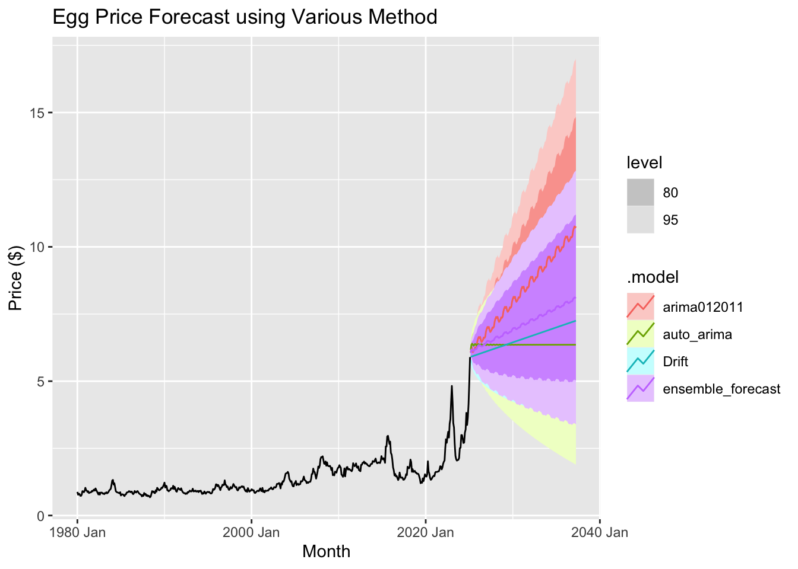
An ensemble method in forecasting combines multiple models to improve the accuracy and reliability of predictions. Instead of relying on just one forecasting model, this approach uses the strengths of several models and combines their results to make better predictions.
In this case, the ensemble method combines three different forecasting models:
ARIMA(0,1,2)(0,1,1): This model looks at past trends in the data to make predictions, adjusting for any trends or patterns that might occur over time.
auto_arima: This model automatically chooses the best way to predict based on the data, finding the right settings to fit the model to the specific characteristics of the data, like trends or seasonal patterns.
Drift Method: This is a simpler model that assumes the future will follow the same pattern as the most recent past values, essentially forecasting the future by extending the recent trend.
By combining these three models, the ensemble method aims to produce more accurate forecasts by balancing the different strengths of each model. This approach can help reduce the impact of any one model’s weaknesses, leading to a more reliable prediction.
The ARIMA(0,1,2)(0,1,1) model stands out as the best based on its superior performance metrics. It achieves the lowest RMSE (0.7499701) and MAE (0.5917141), indicating it provides the most accurate predictions, with fewer errors compared to other models. Additionally, its MAPE of 31.20559 is the lowest, meaning its forecasts have the smallest relative percentage errors, making it more reliable. The model also excels in handling scaling and seasonality, as reflected in its best MASE (4.378337) and RMSSE (3.980400). Its high ACF1 value (0.8762374) suggests it effectively captures the underlying patterns of the data without overfitting, ensuring stability in predictions. Overall, ARIMA(0,1,1) delivers more precise and consistent forecasts, outperforming the other models in terms of error reduction and overall forecasting capability.
Results
Based on the forecast from the ARIMA (0,1,2)(0,1,1) model, we can observe a gradual increase in egg prices over time. By April 2037, the price of a carton of eggs is projected to reach an impressive $10.76. This highlights a slow but steady upward trend, indicating a continued rise in prices in the coming years.
Discussion and conclustion
The forecasting analysis suggests that egg prices are likely to continue rising due to underlying trends. While the drift method and ETS performed well, ARIMA and other advanced models might offer further improvements in capturing seasonality and volatility. The regression model, while providing useful insights, is less adept at handling sharp fluctuations, indicating the need for more sophisticated modeling techniques in future forecasts.
Refining the model and incorporating additional variables will enhance prediction accuracy, particularly in capturing factors like supply chain disruptions, disease outbreaks, and economic shifts that influence egg prices. In Part 3, we will use regression analysis to focus on examining these factors in greater detail, gaining deeper insights into the variables driving price changes. Stay tuned for the next section, where we dive deeper into the data to uncover key drivers of egg price fluctuations.